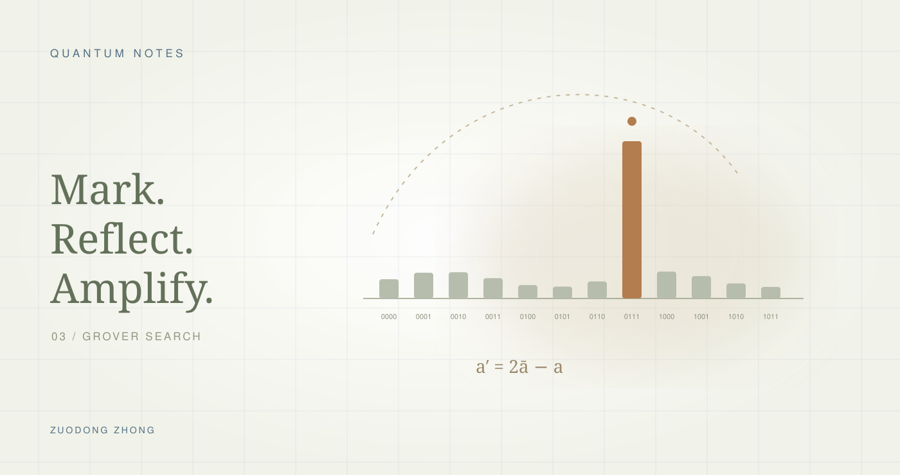

Grover 搜索
标记相位，放大正确答案的振幅
Quantum Notes · 量子计算入门学习 03#从“验证答案”到“更容易找到答案”
笔记的最后一页写下了一个很有吸引力的想法：如果能判断某个候选是不是答案，能不能把判断规则放进量子电路，让正确答案更容易被测到？
Grover 搜索给出了一个清楚的例子。与上一篇的 QNN不同，它不靠训练参数拟合数据，而是设计两种反射：Oracle 改变相位，Diffusion 把相位差转成振幅差。读这篇只需要前面关于相位与干涉的基础。
#Oracle：标记答案，却还没有提高概率
设有 个候选，验证规则 在正确候选上取 1。先用 H 门制备均匀叠加：
每个候选的初始振幅是 ，概率是 。相位 Oracle 的作用为：
它把正确候选的振幅乘以 −1。这个负号对不同候选而言是相对相位；但 ，所以只做 Oracle 后立即测量，成功概率没有提高。
Oracle 并不是免费知道答案
通常从可逆计算验证函数的电路出发，。让辅助位处于 ，就可通过相位回踢得到：
实际实现还可能需要工作辅助位、可逆逻辑与反计算来清除临时信息。能快速验证候选，并不意味着这些门的实现成本为零。演示中让读者直接指定目标，是为了看清放大过程；真正的问题通常根据验证规则构造 Oracle，而不是先把答案找出来。
#Diffusion：以平均振幅为中心反射
接下来施加：
设当前状态是 ，平均振幅为 。因为：
所以 D 对每个振幅的作用恰好是：
也就是把每个振幅以均值为中心反射。对下面的实振幅例子，可以直接画出带正负号的柱状图来理解；一般复振幅也满足同一线性公式。
一次完整的 Grover 迭代是 ：先标记，再反射。这里的 Diffusion 是振幅空间中的反射操作，与本站扩散模型系列中的加噪、去噪过程不是同一概念。
#四选一：完整算一次
设目标是 10。四个候选的初始振幅都是 0.5，Oracle 只把目标的符号翻转：
| 候选 | 初始振幅 | Oracle 后 | Diffusion 后 |
|---|---|---|---|
| 00 | +0.5 | +0.5 | 0 |
| 01 | +0.5 | +0.5 | 0 |
| 10 | +0.5 | −0.5 | 1 |
| 11 | +0.5 | +0.5 | 0 |
Oracle 后的平均振幅为：
目标反射到 ；其他三个候选反射到 。因此在理想四选一、只有一个答案的这个特例里，一次迭代后就能以 100% 概率得到 10。
一步一步放大正确答案
★ 为满足验证条件的候选。振幅保留正负号，测量概率是其平方；每次点击只执行半个 Grover 迭代。
| 候选 | 振幅 a | 概率 |a|² |
|---|---|---|
| 00 | 0.500 | 25.0% |
| 01 | 0.500 | 25.0% |
| 10 ★ | 0.500 | 25.0% |
| 11 | 0.500 | 25.0% |
单个答案、4 个候选：首次峰值为 1 次迭代。
先观察 Oracle 是否改变测量概率。
先用默认设置点击两次，复现表格；再多执行一轮，观察成功率是否继续上升。也可以切换到 8 或 16 个候选，看“只做一次就成功”为什么不是普遍规律。
采样按钮表示独立地重新制备并执行到当前步骤，再测量 200 次。它不会把一次测量后的坍缩状态拿来继续做相干迭代。
#为什么不能无限次放大？
若 N 个候选里有 M 个答案，令：
均匀叠加态在“所有答案的均匀叠加”方向上已有一个角度 。一次 Grover 迭代等效于在正确与错误子空间张成的二维平面里再旋转 。执行 r 次后的成功概率是：
第一次转到接近 时，成功率接近峰值：
因为 r 必须是整数，可以比较附近的整数。单个答案且 N 较大时，，所以查询次数为 。对于 个答案，对应 的尺度。
继续旋转会越过目标方向，成功概率反而降低。默认四选一的例子中，r 从 0 到 1 再到 2，成功率分别是 25%、100%、25%。这不是数值误差，而是理想算法本身的振荡。推导可对照 IBM Quantum 的 Grover 课程。
#回看这组笔记
这三个部分终于连在了一起：复振幅让状态拥有相位；酉门让这些振幅相干地演化；测量把它们变成经典结果。QNN 用损失函数来调整演化，Grover 则直接设计相位标记与反射。
对我而言，入门时最有用的区分是：状态不等于测量结果，叠加不等于纠缠，联合空间很大也不等于能免费读出其中所有信息。先把这些区别算清楚，才更容易判断一个量子算法究竟利用了什么。
- Lov K. Grover · A fast quantum mechanical algorithm for database search，1996：原始搜索算法论文。
- John Watrous / IBM Quantum Learning · Grover's algorithm description：Oracle、Grover 操作与算法流程。
- IBM Quantum Learning · Grover's algorithm analysis：二维旋转与成功概率。